Writers, erasers, reprogramming, the methylation landscape, imprinting, X inactivation and plants
Epigenetics
About this lecture
What is epigenetics? introduced 5-methylcytosine, its copying by DNMT1 and UHRF1, and CpG islands. This lecture goes one level deeper.
The enzymes: DNMT1, DNMT3A/3B/3L that write, TET enzymes that oxidise, and the two routes to removal.
Reprogramming: the two waves of near-total erasure, in the early embryo and in the germ line.
The methylation landscape in real data (GM12878 and K562, chr21): bimodal levels, unmethylated CpG islands, methylated gene bodies, partially methylated domains.
How methylation interacts with transcription factors; imprinting and X inactivation in more depth.
Plants (CG, CHG, CHH; RNA-directed DNA methylation) and organisms with no 5mC at all.
Five forms of cytosine
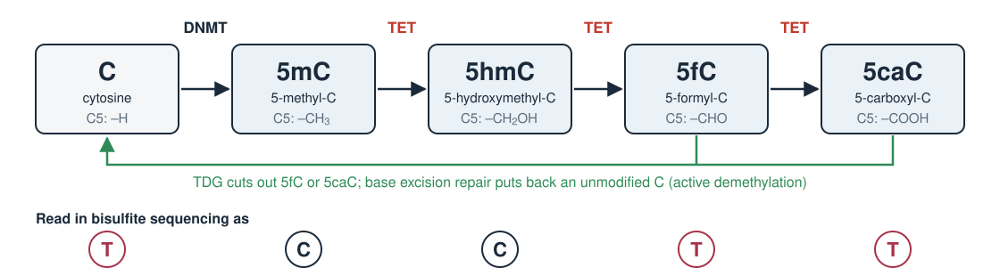
DNMTs add a methyl group to carbon 5 of cytosine: 5mC. In mammals almost only at CpG.
TET enzymes (TET1, TET2, TET3) oxidise 5mC step by step to 5hmC, 5fC and 5caC.
TDG (a DNA glycosylase) cuts out 5fC and 5caC; base excision repair puts back a plain C.
Bisulfite sequencing cannot tell 5mC from 5hmC: both read as C.
The DNA methyltransferases
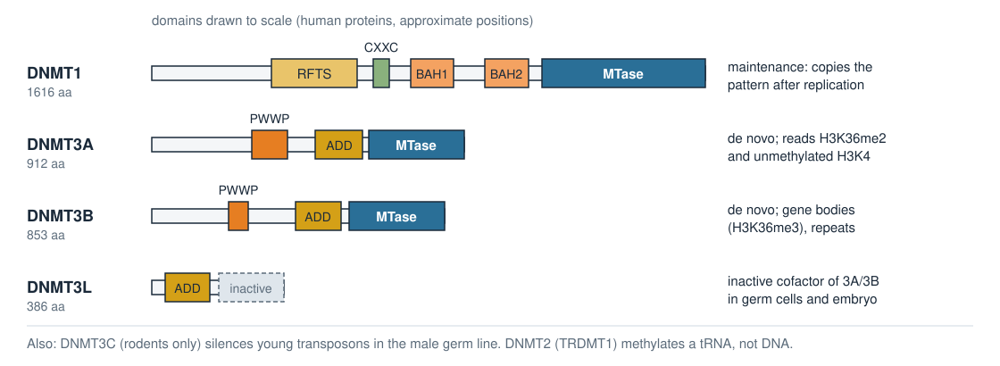
DNMT1 maintains: it prefers hemimethylated CpG and copies the pattern after replication.
DNMT3A and DNMT3B methylate de novo; their PWWP and ADD domains read histone marks.
DNMT3L has no catalytic activity but stimulates DNMT3A/3B in the germ line and early embryo.
Maintenance: how DNMT1 finds its target
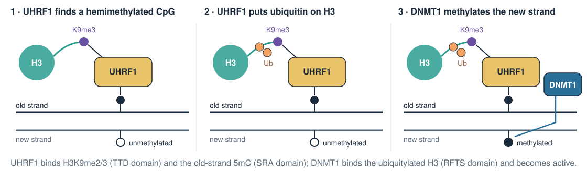
After replication each CpG is hemimethylated. UHRF1 binds it, and binds H3K9me2/3 nearby.
UHRF1 ubiquitylates histone H3; DNMT1 binds ubiquitylated H3, is activated and methylates the new strand.
Copying is accurate but not perfect: roughly 95–99.9% per CpG per division, depending on the region.
De novo methylation reads chromatin
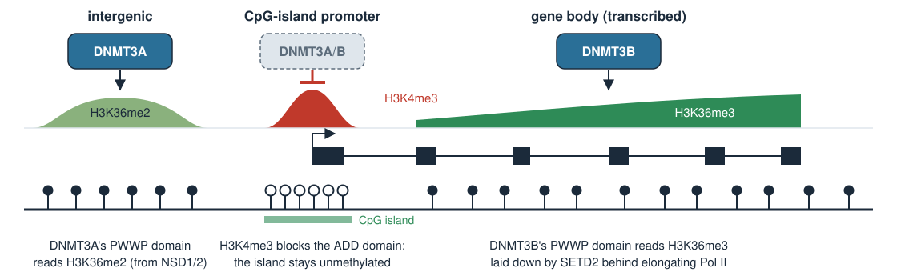
The ADD domain binds histone H3 only when K4 is unmethylated: H3K4me3 at active promoters keeps DNMT3s away.
The PWWP domain binds H3K36me2/3: DNMT3B follows SETD2’s H3K36me3 into transcribed gene bodies; DNMT3A follows H3K36me2 in intergenic DNA.
So the methylation pattern partly follows transcription and histone marks rather than leading them.
Removing methylation: passive and active
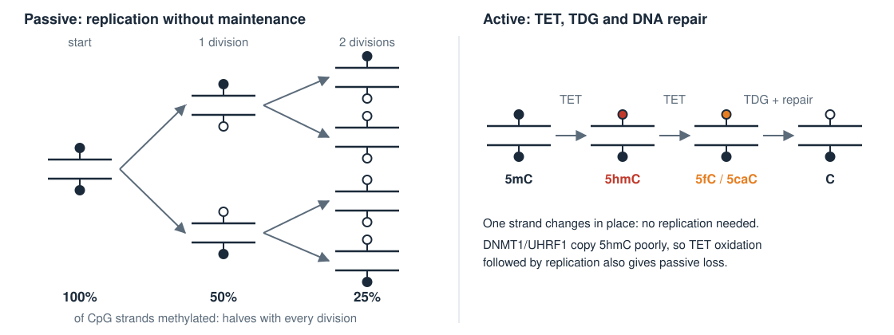
Passive: if DNMT1/UHRF1 do not act at replication, each division halves the methylated strands.
Active: TET oxidation, then TDG excision and repair, removes the mark without replication.
In practice they combine: TET oxidation makes 5hmC, which maintenance copies poorly, so it is diluted.
5hmC: an intermediate, and sometimes a mark
5mC
5hmC
made by
DNMT1, DNMT3A/B
TET1/2/3, from 5mC
abundance
70–80% of CpGs in somatic cells
a few % of 5mC in most tissues; up to ~40% in some neurons
where
repeats, gene bodies, intergenic DNA
gene bodies of active genes, enhancers
copied by DNMT1/UHRF1
yes
poorly
bisulfite readout
C
C (indistinguishable from 5mC)
in disease
CGI hypermethylation in cancer
lost in many cancers; TET2 mutated in clonal haematopoiesis
In neurons, 5hmC is stable and bound by readers (e.g. MeCP2): it is more than a short-lived intermediate.
Two waves of reprogramming
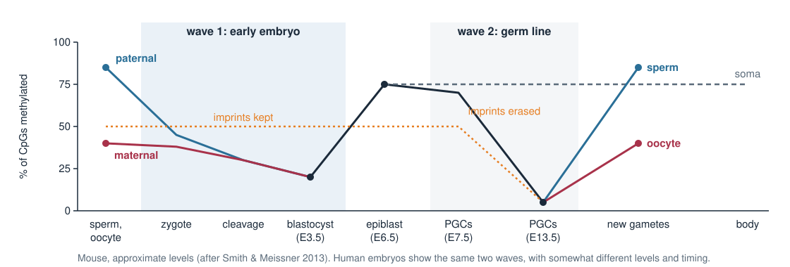
Wave 1, early embryo: after fertilisation both parental genomes lose most methylation (the paternal one fastest). Re-methylation by DNMT3A/3B at implantation.
Wave 2, germ line: primordial germ cells (PGCs) erase almost everything, including imprints, then gametes re-methylate in a sex-specific way.
Erasure resets the epigenome each generation; a few sequences (some retrotransposons) partly escape.
Why imprints survive the first wave
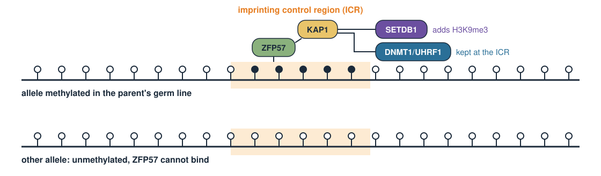
An imprinting control region (ICR) is methylated on one parental allele only, set in the egg or the sperm.
The KRAB zinc-finger protein ZFP57 (and ZNF445 in human) binds its methylated motif and recruits KAP1, SETDB1 (H3K9me3) and maintenance enzymes.
So imprints survive the embryo’s erasure (wave 1), but not the germ line’s (wave 2): they are reset according to the sex of the new parent.
The methylation landscape is bimodal
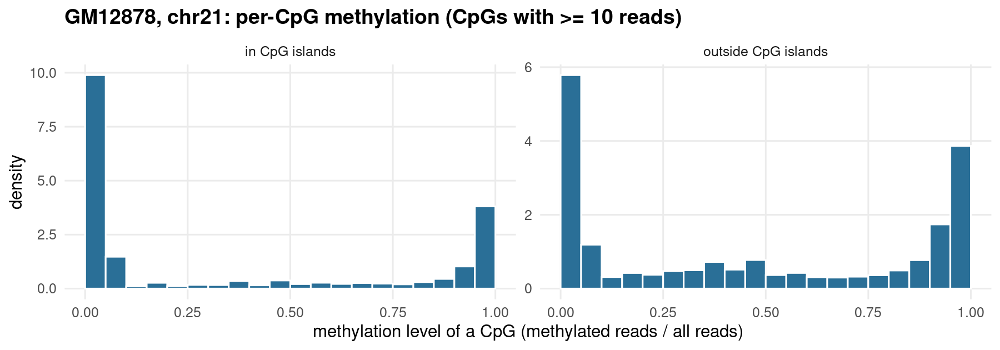
ENCODE whole-genome bisulfite sequencing of GM12878, chr21, 260 663 CpGs with ≥ 10 reads: 38% below 0.2, 34% above 0.8.
Most CpGs are either methylated on (almost) every copy or on none. CpG islands are mostly at 0.
GM12878 is less methylated (0.46 overall) than a typical somatic cell (0.7–0.8): see partially methylated domains below.
Where methylation is, and where it is not
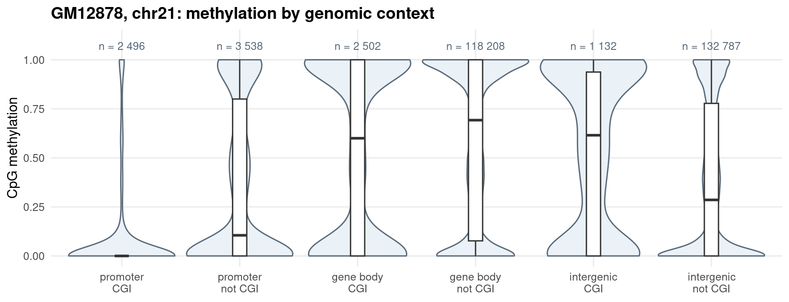
CpG-island promoters: median 0.00 (2 496 CpGs). Gene bodies: median 0.69.
Non-CGI promoters are intermediate (median 0.11, but spread across the whole range).
Intergenic CpGs are low here (median 0.29), because much intergenic DNA of chr21 lies in partially methylated domains.
H3K4me3 repels the DNMT3 ADD domain, and transcription factors bound at the island block DNMTs.
A self-reinforcing loop: unmethylated CpGs attract the proteins that keep them unmethylated.
Promoter methylation and H3K4me3 exclude each other
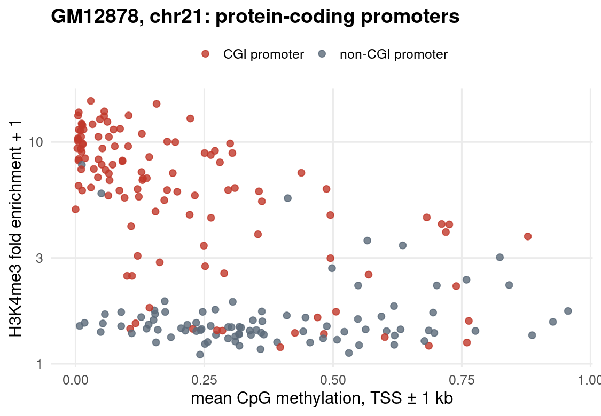
208 chr21 promoters with ≥ 5 covered CpGs (GM12878).
Spearman correlation of methylation with H3K4me3: −0.60.
28 promoters with methylation > 0.6: none has H3K4me3 enrichment > 5. Of 97 promoters below 0.2, 62 do.
Non-CGI promoters (grey) rarely carry strong H3K4me3, methylated or not.
Gene bodies of active genes are methylated
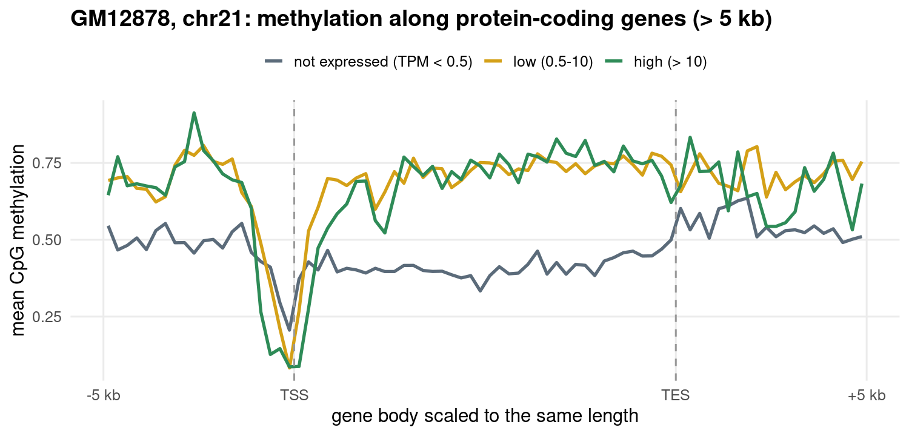
Methylation dips at the TSS, more deeply for expressed genes, and is high along the body of expressed genes (about 0.73) but not of silent ones (0.42).
Mechanism: H3K36me3 from elongation recruits DNMT3B. Gene-body methylation suppresses spurious transcription from inside genes.
Correlation is positive in the body and negative at the promoter: “methylation = silencing” is only true at promoters.
AIRE and DNMT3L (not expressed in B cells): scattered, intermediate values: a partially methylated domain.
Partially methylated domains
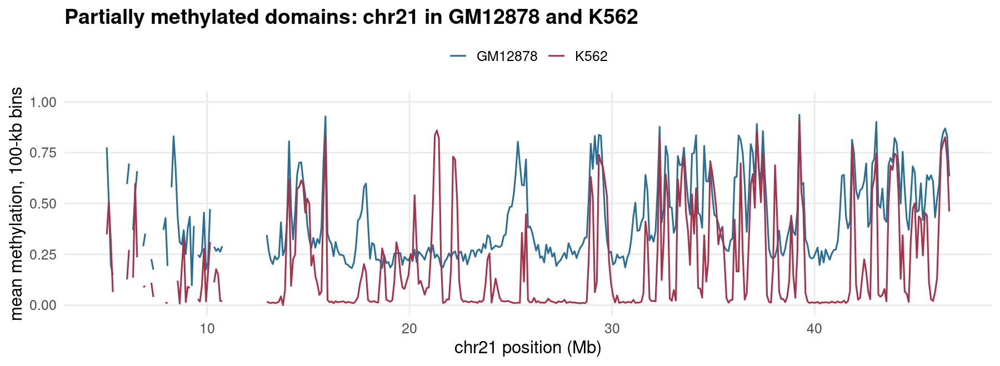
PMDs: domains of 100 kb to several Mb where CpGs are partially and variably methylated. Common in cultured cells, cancers and placenta.
They are late-replicating, lamina-associated, gene-poor heterochromatin. In K562, 203 of 374 bins on chr21 are below 0.1; the same bins are at 0.32 in GM12878 (0.52 elsewhere).
Genes in these domains are mostly silent: 7% expressed in GM12878, vs 68% elsewhere.
Methylation and DNA-binding proteins
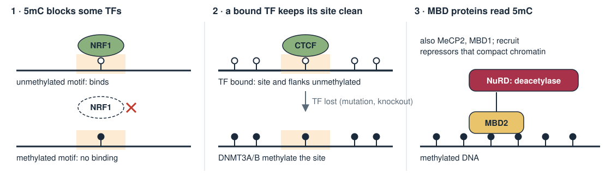
Many TFs (CTCF, NRF1, MYC/MAX and other bHLH, ETS) cannot bind a methylated CpG in their motif; a few (some homeodomain, POU) prefer it.
Binding works the other way too: a bound TF keeps its site unmethylated; lose the TF and the site is methylated.
Methyl-CpG binding proteins (MeCP2, MBD1, MBD2) read 5mC and recruit repressors such as NuRD.
Does methylation silence genes, or follow silencing?
Follows: at many CGI promoters, methylation comes after silencing by other means (X inactivation, Polycomb in cancer); de novo enzymes need H3K4 to be unmethylated.
Causes: methylating a CGI promoter with dCas9-DNMT3A (with KRAB, as in CRISPRoff) silences it, and the silence can persist through many divisions after the editor is gone.
Locks: once a CGI is methylated, re-activation needs DNA demethylation (DNMT inhibitors such as decitabine, or TET).
So: methylation is a stabiliser of a silent state more often than its first cause.
Imprinting: the H19/IGF2 switch
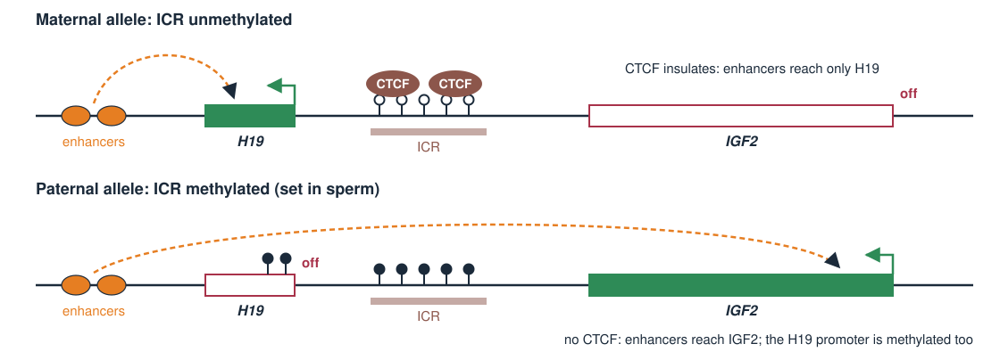
The ICR between H19 and IGF2 is methylated on the paternal allele only (set in sperm).
On the maternal allele, CTCF binds the unmethylated ICR and insulates IGF2: shared enhancers activate H19.
On the paternal allele, methylation blocks CTCF: the enhancers reach IGF2, the growth factor.
Imprinting in disease
disorder
locus
typical defect
effect
Beckwith–Wiedemann
11p15.5
loss of methylation at the KCNQ1OT1 ICR; gain at the H19/IGF2 ICR on the maternal allele; paternal UPD
overgrowth (two active IGF2 copies), tumour risk
Silver–Russell
11p15.5
loss of methylation at the H19/IGF2 ICR on the paternal allele; maternal UPD7
About 100–200 imprinted genes in mouse and human, mostly in ~25–35 clusters, each controlled by one germline ICR.
UPD (uniparental disomy): both copies from one parent. Normal sequence, wrong imprint.
X inactivation: methylation as the late lock
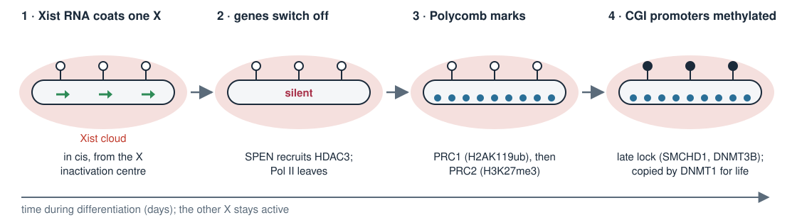
In female cells Xist RNA coats one X; genes are silenced, then Polycomb marks the chromosome.
CGI promoters on the inactive X become methylated last (SMCHD1, DNMT3B) and keep it silent in all descendants.
Without methylation the inactive X can partly reactivate; in culture some genes “erode”.
Transposons: the oldest job of DNA methylation
About 45% of the human genome derives from transposable elements. Most copies are dead, but some L1 and endogenous retrovirus copies can still jump.
Methylation of their promoters keeps them silent; in somatic cells KRAB zinc-finger proteins + KAP1 + SETDB1 set H3K9me3 and recruit DNMTs to young copies.
In the male germ line, piRNAs guide de novo methylation of young transposons (via DNMT3C in mouse); without it, transposons are expressed and meiosis fails.
“Genome defence” may be why DNA methylation evolved; gene regulation came later.
Plants methylate three contexts
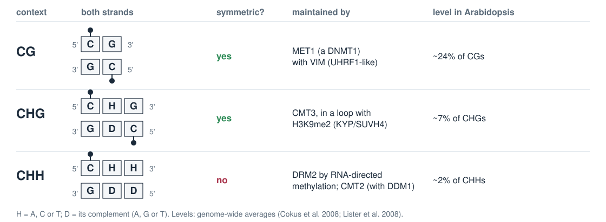
CG is copied like in mammals (MET1). CHG is maintained by CMT3 in a loop with H3K9me2. CHH is asymmetric: there is no template, so it is re-made every cell cycle.
Transposons are methylated in all three contexts; gene bodies of many genes in CG only.
RNA-directed DNA methylation (RdDM)
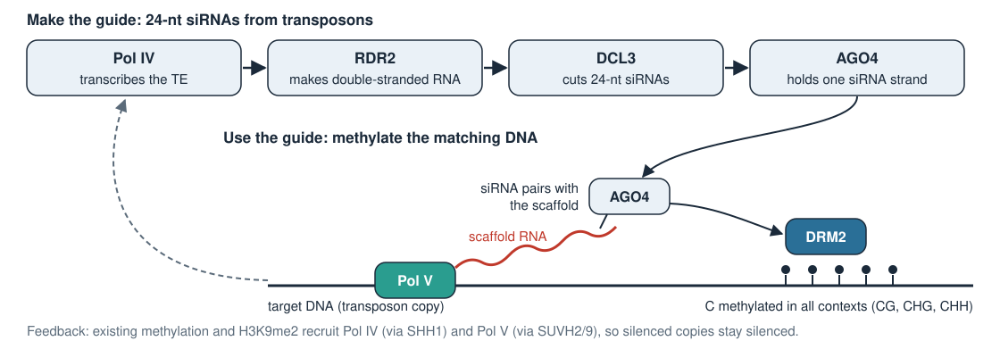
Pol IV transcripts → RDR2 → DCL3 → 24-nt siRNAs loaded into AGO4.
Pol V makes a scaffold RNA at the target; AGO4 pairs with it and recruits DRM2, which methylates C in every context.
Existing methylation recruits Pol IV and Pol V again: a sequence-guided, self-reinforcing silencing system.
Plants: active demethylation and epialleles
Plants remove 5mC directly: the DNA glycosylases ROS1, DME, DML2/3 excise it and repair fills in C.
DME demethylates the maternal genome in the endosperm: the basis of plant imprinting (MEA, FWA).
Plants do not erase their methylome in every generation the way mammals do, so methylation states (epialleles) can be inherited for many generations.
Examples: the peloric Linaria flower (a methylated CYCLOIDEA gene); natural methylation variation among 1001 Arabidopsis accessions.
5mC across the tree of life
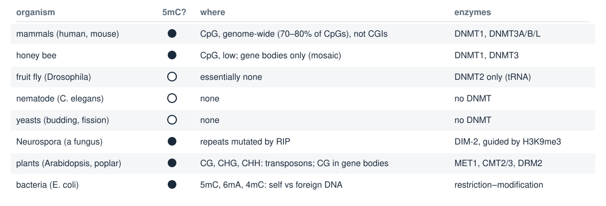
DNA methylation is ancient (bacteria use it to mark their own DNA) but has been lost many times: fruit flies, C. elegans and yeasts have essentially none.
Patterns differ: vertebrates methylate almost the whole genome; most invertebrates only gene bodies; plants and fungi target transposons and repeats.
Summary
idea
key fact
writers
DNMT1 maintains (with UHRF1); DNMT3A/3B write de novo, reading H3K36me2/3 and unmethylated H3K4
erasers
passive dilution at replication; active: TET oxidation → TDG → repair. 5hmC reads as C in bisulfite data
reprogramming
two waves: early embryo (imprints protected by ZFP57/KAP1) and germ line (imprints erased and reset)
landscape
bimodal; CGI promoters unmethylated with H3K4me3; active gene bodies methylated
PMDs
large, late-replicating domains that lose methylation with divisions; deep in K562, mild in GM12878